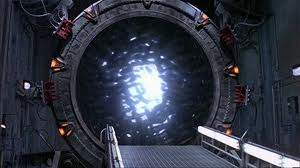

MacGyver
 De: La Frikipedia, la enciclopedia extremadamente seria.
De: La Frikipedia, la enciclopedia extremadamente seria.
De la serie grandes personajes:
Macgyver cuando se canso de intentar desatascar el baño por las buenas.
| Nacimiento
|
29 de septiembre de 1985 (nacio ya grande)
|
| Muerte
|
Oficialmente 21 de mayo de 1992 (pero se dice que sobrevive a las 2:00 am en algunos canales)
|
| Ocupación
|
ser todo
|
| Nacionalidad
|
Extraterrestre o Extraterrenio
|
| Malo o bueno
|
imparcial
|
| Atentados contra la humanidad
|
destruccion parcial de Euskadi
|
| Religión
|
Cientologia
|
| Notas
|
El guachin que resuelve problemas grosos con tres boludeses
|
Hermano no biológico del padre de Raw y Smack Down!, historiador, puericultor, la letra e(homer simpson es la o), militar, mercenario, sexador de pollos, cajero del Caprabo, superheroe, delineante, agricultor, ganadero, pintor, lider de ejército americano y es capaz de construir un ala delta con unos calzonzillos rotos y una escobilla del water.
Francis Lorenzo, enemigo mortal de MacGyver
Enemigo mortal en un principio de Satán, mitigo su lucha con este al ver que era imposible derrotarlo y de esta manera se hicieron muy amigos, por lo que dirigio su ira hacia otro de sus enemigos mortales mas conocidos, Carmen Sevilla.
Con la inestimable ayuda de Chewaka, consiguieron derrotar a tan temible ser, en una dura batalla contra el eje del mal, donde Francis Lorenzo.
Gracias a él se han popularizado mucho materias como "Bricomanía fácil con explosivos", "Mecánica del autómovil basada en bridas y chicle", "100 formas creativas de dejar KO a un esbirro sin que salte la alarma del campamento enemigo" o "Construye un Sable Láser sin cortarte las manos con un clip y doce tiras de esparto".
MacGyver es uno de los culpables de que el 90% de los niños de una generación hayamos acabado como ingenieros/informáticos/frikis. Básicamente tiene más peligro que Espinete haciendo puenting (pero no tanto como Willie Fog con un bonobus), le das un bote de ketchup y un rollo de cinta aislante y te la lía.
El origen de MacGyver no está claro pero fuentes fidedignas aseguran que es hijo de una señora de provincias que, viéndose obligada por circunstacias personales gravísimas, fue a trabajar como empleada de hogar a un rancho del bajo Minnessota. Viéndose mal aconsejada por una cuñada intentó el viejo truco de quedarse preñada del dueño de la propiedad (tenía tanta pasta que acojonaba, el buen hombre) y después de consumar la relación, habiéndose hinchado a hormonas de fertilidad previamente, comentó con el ranchero que como pensaba llamar a su futuro hijo, a lo que este respondió mientras arrojaba un preservativo por el retrete: "Si sale de esta le ponemos MacGyver".
Debido a su excesiva fama, MacGyver se vio obligado a ocultarse bajo una identidad falsa (trabajando en un proyecto secreto del gobierno llamado Stargate). Pero todos sabemos que en verdad es él. Es MacGyver, pero en el espacio.
Ahora trabaja en el IES Ingenio de mantenimiento, pero hay que decir que no es tan bueno como antes.
Las herramientas de trabajo
- Navaja multiusos suiza. (o un clip)
- Chicle
- Cinta Scotch multipegas
(y ya está, nada más, sólo esas tres)
MacGyver y las mujeres
 MacGyver durante su lucha contra los Goa'uld
MacGyver es el casanova más exitoso de todos los tiempos. En cada capítulo de su vida, emitidos estos por la Fox en un principio, ayuda a un mínimo de una mujer a salir de cualquier aprieto utilizando sus herramientas (en su defecto, se las gorronea a otros).
Lamentablemente, MacGyver parece tener tendencias hacia el celibato y, por el momento, se desconoce que se haya casado con ninguna. Cuantas más mujeres conoce, menos se las liga... únicamente las salva y se va buscando más. ¿Qué hombre es capaz de hacer eso sin recurrir siquiera al onanismo? Está claro: MacGyver.
Idolo de Patty y Selma cuñadas de Homer Simpson
Se comenta en programas del corazón varios, que uno de los hijos perdidos de McGyver podria tratarse del Manitas de Art Attack, el cual no es reconocido por este, debido a su adicción a drogas varias y de diseño. (vease las rayas que pinta en su programa con extraños polvillos blancos).
Inventos famosos de MacGyver

MacGyver en su etapa blanca
- Richard Dean Anderson: Sin duda el mejor invento de MacGyver
- Bombas MacGyver (TM): En cada episodio aparece al menos un bombazo de la talla del TNT pero con materiales de andar por casa. Ha sido ejemplo de varias generaciones a la hora de salir del instituto en Navidad tirando bombazos fabricados con bolitas de aluminio, salfumán como reactivos y una botella de FuenteBella (-vacía-) como contenedor. También usa calcetines como mecha.
- Bomba Atomica: Bomba atomica construida con un clip, una goma y una alpargata de andar por casa (por sino lo sabian, las alpargatas pueden contener uranio 112, 016 y 911 ademas de un enano). Efecto: Depende si ya ha sido usada y huele a cabrales rancio que tira pa tras la explosion no deja un bicho vivo en 99 kilometros (pero solo en canarias en españa son 100km),pero si estan limpias ocurre otra cosa..............................¡NADA! donde coño se ha visto una alpargata limpia.
- Tanque modelo Demolisher-666: consiste en juntar dos tapones de corcho, un bote de pintura oxidado y cuatro tuercas. El tanque está equipado con dos barquillas acopladas con cañones de fusión siotérmica de plasma y un cañón central con una carga de diez misiles Tomahawk. El blindaje consiste sencillamente en un escudo de energía etnoplástica conjunta y una servoarmadura inteligente de vitrovanadio extruido.
- Armadura Crusader antimisiles: para fabricar una armadura capaz de soportar hasta a Leonardo Dantés desafinando, basta con juntar una tirita y un poco de chicle en proporciones exactas y batirlo en un ventilador de doce pulgadas durante el tiempo que un fotón tarda en recorrer 11,4777(periodo) metros.
- Anthraxgantamiento: únicamente un puñado de harina y dos cucharadas de azúcar, todo bien removido con un clip de aluminio y níquel, crea un efecto devastador a quien se zampa las tortitas de maíz y cebada.
- Bomba McKaboom: Creada a partir de una chincheta tipo "T" con base circular, esta bomba posee una potencia superior a las bombas H actuales, de un calibre 20.000.000 Megatones, es decir, lista para liquidar al mismísimo Dios.
- Triple Whopper: Se dice que estando un día en el Scottex y las heces que le salían por el ano
- Navaja Suiza: No es que sea invento suyo, es que los suizos se basaron en él al hacerla.
- Prendas de vestir: Un día McGyver en una casa de campo se encontró con una oveja bebiendo agua en un río para sorpresa de este de entre las aguas salto un cocodrilo que quiso comerse a la oveja en un acto reflejo McGyver salido disparado hacia ellos y con ayuda de un trozo de cinta aislante y un poco de chicle "trident" (marca reg.) inventó los polos Lacoste.
- Ojivas Nucleares: MacGyver sólo necesita de algunas latas de cerveza, galletas de animalito y un reloj digital para crear la mas poderosa arma nuclear, y un chicle de mora azul que desencadene una reacción en cadena capaz de atravesar continentes enteros.
- boeing 747: Macgyver puede construirlo con un chicle y dos palitos de fósforos.
- McLaren MP4-22: Allá por 2006, McGyver estaba arreglando su R5 en el desguace y se le ocurrió montar un coche de Fórmula 1. Actualmente, dicho vehículo es con el que compitió Fernando Alonso y su amiguito del alma en 2007. Con las piezas que le sobraron del R5, se montó un Seat Leon FR y el Alinghi, la embarcación ganadora de la Americas' Cup de Valencia.Las modificaciones se hicieron con un clip.
- Furciometro: Se dice que McGyver monto este aparato en un momento de necesidad, usando para ello un chicle y unas bragas usadas
- Fragata: McGyver se fue un dia a la playa a nadar, cuando vio que estaba muy lejos de la costa hizo una inmersion de 999.999.999.999 kilometros bajo el agua para cojer una piedra, 2 algas, una merluza y 2 kilos de arena. Cuando subio a la superficie construllo el portaviones, desde entonces los primeros paises en la primera guerra mundial le copiaron el prototipo.
- La frikipedia: la invento en el 2006 pero debido a ke lo hico en una hoja de papel y no en una computadora se la robo kusher y ahora su dueño es kusher T_T
- Importante!:A pesar de saber hacer muchos inventos,nunca supo como disparar una pistola,o por lo menos nunca le dio la gana disparar una.
- La MacGyVer Gasa (dilo todo junto) Es un invento genial, imagiante que los gilipollas rusos te capturan y tienen la revista playboy de enero de 2009 de los Estados Juntos de Norte America (hmmm, Carmen Electra) y te dan ganas de hacerte una pajilla, bueno activa la Macgyver Gasa y hazte tu puta paja y, magicamente ¡te limpia la lefa! El Bananero las usa.
- La MacGyver Gota (tambien dilo todo junto) Colocate una gota para ver todo ccomo a traves de una Rayos X! pero con tres gotas ves todo rayos xxx!!! miralo todo como en una peli porno, y hacele un brbrbrb. El Bananero la tiene.
Repercusión de MacGyver
Se cree que nuestro querido hombre polifacético también ha influido en ciertos caracteres de la sociedad española, dejando un rico legado:
Dichos populares
Exclusiva herramiena multiusos de edición especial de McGyver (limitada, muy pocos ejemplares, solo para coleccionistas)costo 400
leros - "Eres todo un MacGyver": Si alguien le dice esto a un hombre, especialmente si es su mecánico o fontanero, le está indicando que quiere tener relaciones sexuales con el susodicho.
- —"Cariño, me puedes arreglar la lavadora?", —"Sí, venga, ahora llamo a MacGyver": la contestación del marido indica que no realizará la acción pedida tal vez jamás.
- —"Papi, yo quiero ser piloto", —"Sí hijo, y yo MacGyver": esto indica que el niño no tiene muchas posibilidades de ser piloto aeronáutico.
- "Eso sólo lo podría hacer MacGyver": eso es imposible
- "Tienes más peligro que MacGyver en una ferretería": tienes mucho peligro
- "Eres mejor que MacGyver, que fabricó una bomba con un chicle y le sobraron piezas": tú eres el Amo
- "Habrá que hacerle un Macgyver": Esto se refiere a cuando se te averió algo en tu casa o donde sea que estés y quieres hacer notar que vas a "tratar de arreglarlo".
Cultura Popular
- MacGyver inspiró a los mecánicos a llevar el pelo estilo años 80.
- MacGyver puso de moda las cazadoras, cuando todo el mundo apostaba por no llevarlas.
- MacGyver propició que miles de hombres creyeran que ellos podían, y por consiguiente que se tiraran miles de cajas de herramientas.
- MacGyver fundó un taller "crea tu propio reactor nuclear con una waflera" en la casa de cultura mas cercana a tu domicilio.
- MacGyver desarrolló una novia con solo un maniquí viejo, revistas esotéricas y un microchip.
Acontecimientos populares
- MacGyver provocó un aumento del 300% de
pajas accidentes domésticos al inducir que cualquier problema se puede resolver con chicle y una moneda de 5 céntimos oxidada.
- Desde la emisión de la serie, la venta de chicles ha sufrido un crecimiento exponencial.
- De la misma manera, Suiza obtiene ahora la mayor parte de su PIB en venta de navajas y no de relojes.
- MacGyver tuvo un enfrentamiento fructuoso contra los malvados etarras del País Vasco:
- MacGyver es un héroe popular que aparece en los billetes de seis Euros.
- Como puede observarse en el link anterior, MacGyver es único en la pesca sin muerte de toallas en la ribera vasca.
- MacGyver hizo disminuir la venta de muñecos del Pato Donald.
Todos estos acontecimientos se hubieran evitado con un simple mensaje al final de cada capítulo: No intenten esto en casa

Sueño sucesivo de MacGyver.
Gran final de la Serie
MacGyver termina cuando este deja la fundación Phoenix y descubre que tiene hijos de algunas de sus aventuras eróticas con mas del 60% del reparto de la serie que eran mujeres y cuando consigue localizarlos a todos se escapa en una moto en plan Easy Rider y consigue desaparecer con un teletrasportador hecho por medio de un clip y un reloj de cuarzo liquido, empiezan algunos créditos y se ve ligeramente su silueta en un paisaje de Carnicerías y Cafes después sale un texto abajo que dice MacGyver Will Return o en español MacGyver Regresara.
El cual se encuentra en otra dimención la cual se logra llegar saltando del puente Golden Gates, dando 3 giros mortales en el aire, mandando un mensaje de texto al número 666, dandole la vuelta al jugo Full Metal Alchemist y caer de cabeza al agua y todo en un minuto.
Enlaces externos
Autor(es):
- Krusher
- Nexo
- Darz Mol
- Cortocircuito
- CartDestr
- N3ptun3r
- Hari Seldon
- Kenedhor
- La patata española
- BloodyFountain
Frikipedia 2005-2016, Licencia
GFDL 1.2 - Extraído por FrikiLeaks